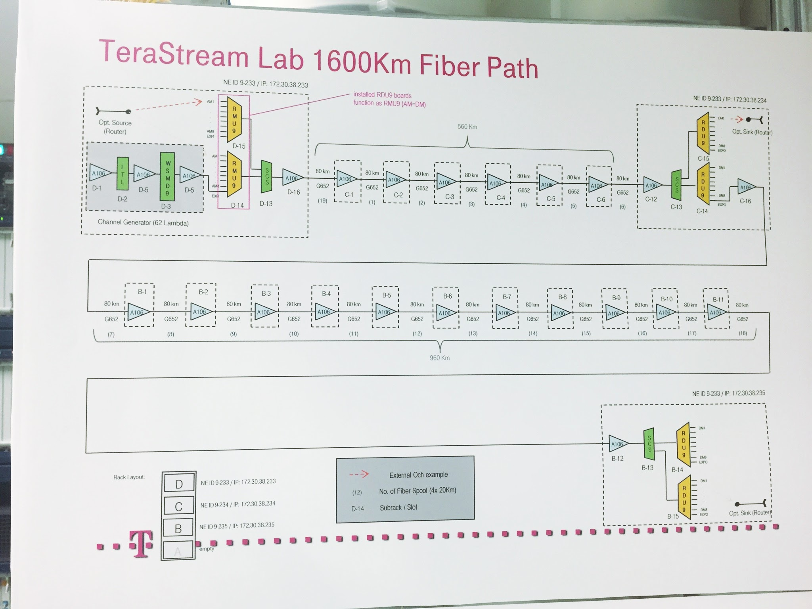
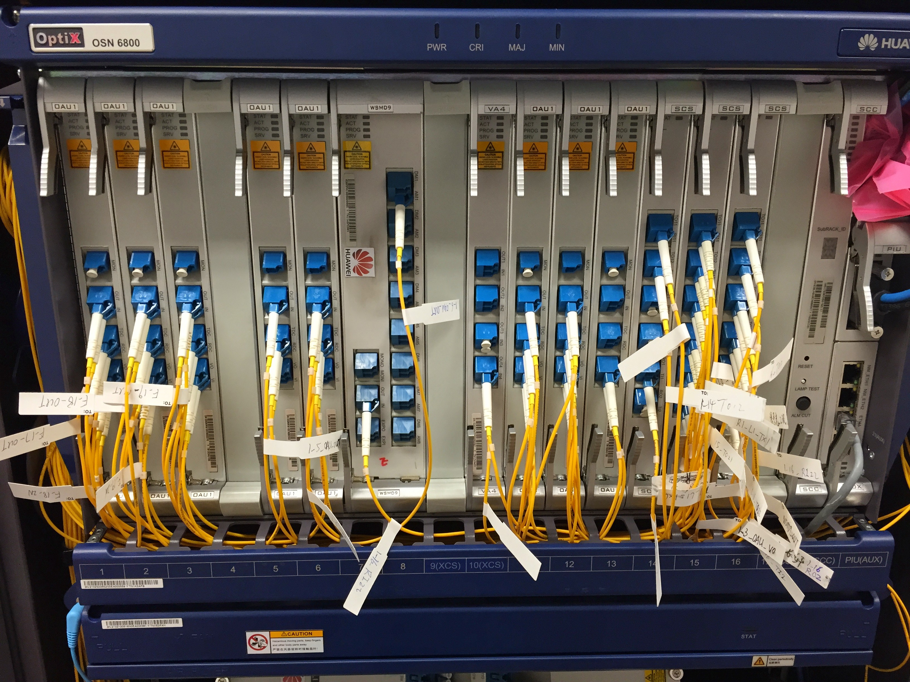
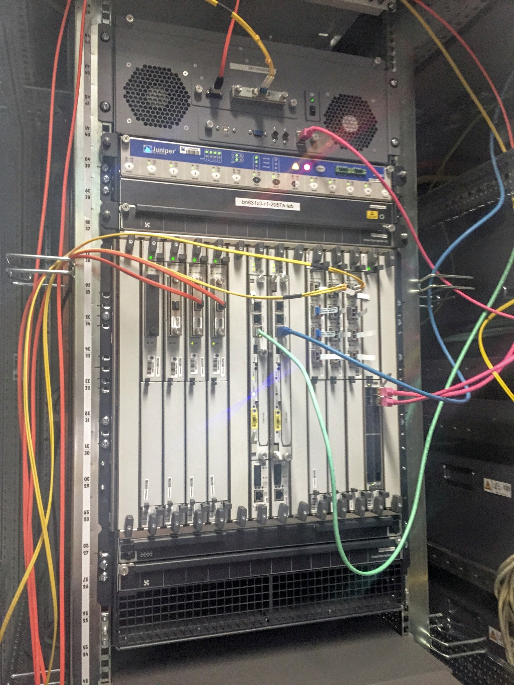

Posts tagged "100G":
Interoperable 100G DWDM equipment
1 Interoperable coherent 100G DWDM
This is a non-comprehensive list of interoperable coherent 100G DWDM equipment.
| Vendor | Model | Description | Tested |
|---|---|---|---|
| Juniper | MIC3-100G-DWDM | 1x100GE IPoDWDM line card for MX | TS |
2 Coherent 100G DWDM without interop
This is a non-comprehensive list of equipment that supports coherent 100G DWDM but does NOT support standardised FEC and mapping:
| Vendor | Model | Description | Tested |
|---|---|---|---|
| Juniper | P1-PTX-2-100G-WDM | 2x100G IPoDWDM module for PTX | |
| Juniper | PTX-5-100G-WDM | 5x100G IPoDWDM module for PTX |
Pictures from the 100G DWDM interop lab
These are some pictures from the coherent 100G DWDM interoperability tests performed in the TeraStream lab. Read the full story and look at the router configuration.
1 1500km fiber test path
All tests have been completed over a DWDM system in our lab. It can be slightly reconfigured but have been at least 1500km in all the tests.
The logical topology of our 1600km fiber path 
It's amplified with these EDFAs every 80km: 
No RAMANs! Here's the whole amp rack:
The 1600km of fiber rolls
In a previous, slightly less carrier-grade, incarnation:

2 Router DWDM linecards
2.1 Juniper
The first Juniper implementation was a pure beta build with the optical parts in a separate chassis and grey 100G-SR10 link back to the MX960. It looks more like a transponder but management happened exclusively from the router and the components could later simply be integrated on a linecard instead of in a separate chassis. I believe four of these were built all in all of which two three (one broke, so we got a replacement) ended up with us.

Juniper have since released a proper linecard. It's a single port 100G card and instead of utilizing a CFP they have shrunk it down to a CFP2. Specifically CFP2-ACO which means it's analog and all the DSP magic is happening on the linecard unlike the earlier CFP which had pretty beefy DSPs of its own.
We still have one of the first generation "transponders" from Juniper in use as part of a PNI (private peering link) with NorduNet (AS2603). NorduNet is running Juniper routers and they have it connected to their router in Hamburg which is then linked over a piece of metro dark fibre to a TeraStream Nokia 7750 router.
2.2 Nokia
Nokia, previously Alcatel-Lucent (previously TiMetra), were one of the early partners behind the 100G DWDM standard and were also early with putting together a line card for their 7750 router:
They are now also rolling new 2-port cards for the 7950, which we're about to install. Here's me with one of those cards:
And installed in router (the one on the left - the right one is for grey optics):
2.3 Cisco
Cisco has a couple of different generations. Here's one of the first for the ASR9000 router, which has since been discontinued:
There is also a transponder for the ONS15454 that integrates with the router, much like the Juniper solution, so the DWDM configuration can be managed by the router but the optical components are situated in a ONS15454 chassis. I don't currently have a picture of this however.
Laserbeak is Cisco's latest addition to the family of 100G cards that support the standard, here in the middle (also with 20x10GE ports);
The Laserbeak card also uses the more modern CFP2-ACO optical modules.
2.4 Huawei
Last but not least we have stack of Huawei routers. The 2-port card in the first two slots is the 100G card:

Configure your 100G DWDM linecard for interop!
This is how you configure your shiny new 100G router port for interoperability according to the standard. Read the full story and look at the pretty pictures from our 100G interop lab.
The interface number is naturally an example and you need to fill in yours. The same is true for channel / frequency / wavelength and output power. I have however shown a configuration here that is the equivalent for each platform, i.e. we use a frequency if 193.4THz, which is channel 34 on Nokia, channel 54 on Huawei and wavelength 1550.12nm on Juniper. Output power is -10dBm but this is expressed in different ways, some platforms use dBm while other work in units of 0.1 dBm which means that -10dBm is equivalent to a value of -100.
1 Cisco
Cisco IOS XR configuration for the ASR9k. Already XML formatted so you can punt it over the NETCONF interface and have your router configured!
<interface-configurations xmlns="http://cisco.com/ns/yang/Cisco-IOS-XR-ifmgr-cfg"> <interface-configuration> <active>act</active> <interface-name>dwdm0/1/0/20/0</interface-name> <dwdm xmlns="http://cisco.com/ns/yang/Cisco-IOS-XR-dwdm-ui-cfg"> <g709> <fec> <fec-mode>high-gain-multivendor-hd</fec-mode> </fec> <enable>true</enable> </g709> <wavelength> <wave-channel>19340</wave-channel> <wave-channel-number>channel-frequency</wave-channel-number> </wavelength> <transport-admin-state>in-service-config-allowed</transport-admin-state> <transmit-power>-100</transmit-power> </dwdm> </interface-configuration> </interface-configurations>
2 Huawei
CLI conf for Huawei since their NETCONF interface is currently an abomination.
controller Wdm 1/0/0 fec enhanced # interface 100GE 1/0/0 optical-tx-power target -100 wavelength-channel 54 #
3 Juniper
Juniper calls the standard "hgfec", here expressed in XML that you can send over a NETCONF interface!
<configuration xmlns="http://xml.juniper.net/xnm/1.1/xnm"> <interfaces> <interface> <name>et-10/0/0</name> <optics-options> <wavelength>1550.12</wavelength> <tx-power>-10</tx-power> </optics-options> <otn-options> <laser-enable> <fec>hgfec</fec> <rate>otu4</rate> </otn-options> </interface> </interfaces> </configuration>
4 Nokia
Here's how to configure a port on Nokia SROS. "interop2" is the magic name for the interoperable FEC and bit mapping:
port 1/2/3
otu
dwdm
channel 34
coherent
channel 34
compatibility interop2
target-power -10
Let there be light - interoperable 100G DWDM
This is the story of interoperable 100G DWDM - what we have accomplished and how we got here.
During the summer of 2016 we, in the TeraStream team, performed a successful test of coherent 100G DWDM linecards between routers from Juniper and Huawei. It was the last of a long series of tests and with it, we have now verified interoperability of coherent 100G DWDM interfaces between all of the four major router vendors; Cisco, Huawei, Juniper and Nokia.
The standardisation work laid down by the IEEE and ITU-T have long ensured interoperability in the networking industry, both for Ethernet (IEEE) and various SDH (ITU-T) interfaces. However, in the land of opto all has been dark… since the inception of WDM networks, we have seen transponders with proprietary technology making vendors equipment incompatible with each others. Sometimes different ASIC generations even result in products from the same vendor being incompatible.
Those days are now over. Cisco, Huawei, Juniper and Nokia now all produce line cards for their routers that follow the same standard for how to do long-haul coherent 100G DWDM.
You can skip directly to the pretty pictures from our lab or look at how to configure your router interfaces for interop!
1 A word on optical line level codings
DP-QPSK is the (de-facto) standard for coherent 100G DWDM. All was fun and games in the days of 10G as OOK (On-Off Keying) was both cheap and good enough for long haul optics.
The first generation of 40G DWDM equipment was largely based on 10G technology put into overdrive. Needless to say it didn't work very well. Following this we saw a number of encoding technologies pop up with each vendor pushing their own agenda. This didn't just lead to non-interoperable products but it also resulted in sky-high prices as everyone needed their own specialised components. Among the solutions there were some vendors pushing for coherent detection but as 40G was pushing technological boundaries on a 4x10G budget, this never really took off. Too little, too late and at too high a price.
With 100G people had learnt the lesson. Coherent was the natural choice and by standardizing on a few things, like 25G lasers and gearboxes, vendors realised they would have much greater volumes and thus much lower component prices. Said and done, the Optical Internetworking Forum (OIF) declared that DP-QPSK would rule the world of 100G DWDM.
2 The FEC and mapping mess
Unfortunately, using a few standardised components doesn't lead to interoperability. Here's a diagram of a coherent 100G DWDM CFP module. It's a slightly silly diagram as it shows the signal being transmitted an received by the same module but it illustrates the components both on the transmit and receive side.
{kind=link}
The parts in green are standardised while red highlights proprietary components. Forward Error Correction (FEC), framing and bit mapping is performed by one or more DSPs, either located in the optical module or on the linecard and these are the areas where most proprietary algorithms take place. To achieve interoperability these algorithms needed to be defined!
Enter the standard, which describes exactly those items.
3 Hard Decision "Staircase" Forward Error Correction
The standard describes a strong hard decision FEC algorithm, known as "Staircase FEC", designed by Cortina Networks (now part of Inphi).
Cortina has submitted this FEC as a proposal for standardization into ITU-T for OTU4 and beyond 100G multi vendor activity. Furthermore, Cortina intends to propose a license and royalty free fee model for use by component vendors, system manufacturers, and service providers.
There are other standardised FEC algorithms, most notably the Reed-Solomon 255,239 described in G.709 by ITU-T. While this FEC has seen widespread deployment on 10G and could potentially be used at 100G, it does not perform as well as the Cortina Staircase FEC, which would lead to a shorter reach.
The Staircase FEC has the same 7% (actually 6.7%) overhead as RS(255,239) but achieves a higher net coding gain (NCG) of >9.4dB compared to roughly 6dB of RS(255,239).
It's a hard decision FEC which means it works with simple Analog-Digital Converters (ADCs) whereas a soft decision FECs requires multi-bit output from the ADC and much more processing power in the FEC DSP. Simple means less transistors which in turn translates to lower power consumption and higher production yields, thus lowering cost.
Only 20µs of latency is introduced by the Staircase FEC and it has a very low error floor at 1e-22 leading to a practical reach in excess of 1500km.
4 Standardised framing and bit mapping
A FEC operates on block of bits and does not really need to understand the meaning of those bits, which is where the framing part comes in, in this case a standard G.709 OTU4 framing. The framing defines the start and end of our payload and includes various "overhead bits" which can be used to signal defects.
The mapping of the Staircase FEC's block of bits to G.709 OTUk frames is also defined through this standard. Through clever interleaving of bit "rows" the efficiency of the FEC is further improved by reducing the effects of "swaths of errored bits".
5 TeraStream and 100G DWDM
Interoperable coherent 100G DWDM has been a corner stone of the TeraStream design and a requirement, based on this standard, to the vendors from day one.
Deutsche Telekom, together with the vendors, have invested considerable resources over a number of years, in the standardisation and verification of this technology and it is with joy that we can say that our work has finally paid off.
Through these last tests, performed during the summer of 2016, interoperability of coherent 100G DWDM between all four major router vendors has finally been achieved.
It's been an arduous task with various technical issues delaying the process. For example, clock drift due to failure to read the sync signal from the correct end, leading to alignment errors, required modification to an optical module. That modification lead to a chip respin. Respins are on the order of half a year so even the most miniscule of differences can lead to considerable delays.
6 Now what?
So now we have interoperable 100G DWDM, now what? What do we do with it?
Having interoperable 100G DWDM is immensely useful. We have deployed 100G DWDM interfaces across the entire footprint of the TeraStream pilot networks, which includes Croatia and Germany, to enable a multi-vendor network without external DWDM components.
Here's a diagram of the logical toplogy, with a rough correlation to physical fiber paths, used by the TeraStrem pilot in Germany which is carrying these standard 100G DWDM signals.
TeraStream DE pilot topology 2016
{kind=link}
Synchronising the technology used within a network is difficult. Doing it between multiple networks, owned by different organisations, is close to impossible, which is why interoperable 100G DWDM is such a big deal. We can now use this technology to interconnect with external networks, for example to peering partners, at 100G. You can see a 100G DWDM peering connection in Hamburg where we meet NorduNet (AS2603). NorduNet has a Juniper MX router and there's a Nokia router on the TeraStream side.
Deutsche Telekom is also part of the Telecom Infrastructure Project (TIP) initiated by Facebook and the standard 100G DWDM is now part of one of the working groups within TIP.
7 100G peering
The vast majority of peering links today are at 10G speed and using grey optics. Upgrading to 100G to meet increasing bandwidth demands presents challenges on the optical layer. While 10G is available as LR (10km), ER (40km) and ZR (80km), the selection of grey 100G optics is much more limited.
With a standard 100G DWDM interface we can now switch to using DWDM for peering interconnects. The reach, even unamplified, of these 100G DWDM links is much better than grey optics, partly due to better lasers and receivers but also thanks to FEC.
Another benefit of always having a FEC is early failure detection. With grey optics we can be dangerously close to the margin of what the receiver can detect yet have no packet loss. Wiggling the connector or natural aging of the components can then introduce packet loss. With FEC, we know the pre-FEC BER, how many corrections we are making per second and how close to the limit of the FEC we are operating. This enables us to detect early on when we are approaching the limit and act proactively instead of reactively. In practice, it means we notify the routing system (IS-IS / BGP) of impending link failure and we can reroute traffic before we actually drop any packets.
TeraStream is using 100G DWDM on peering links to external partners - a feat that would be practically impossible was it not for a standardised interface. Other use cases include data center interconnects, mobile backhaul, metro distribution and so forth. Anywhere you can deploy 100G you can use interop 100G DWDM.
8 Are you ready?
Make sure you never buy a 100G linecard that does not support interoperability!
What use case will you find for a standard 100G DWDM interface? While you ponder that, the TeraStream team will continue to push the limits for a harder, better, faster and stronger Internet.
We have some pretty pictures from our lab and you can look at the router configuration of how to configure your line cards for interop.